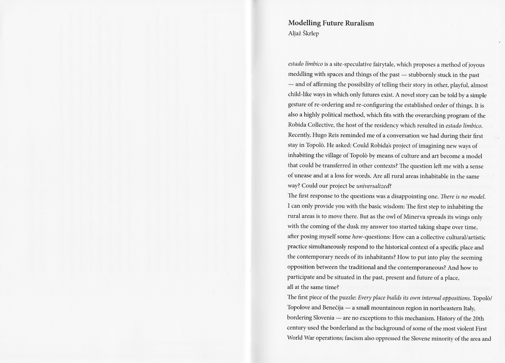
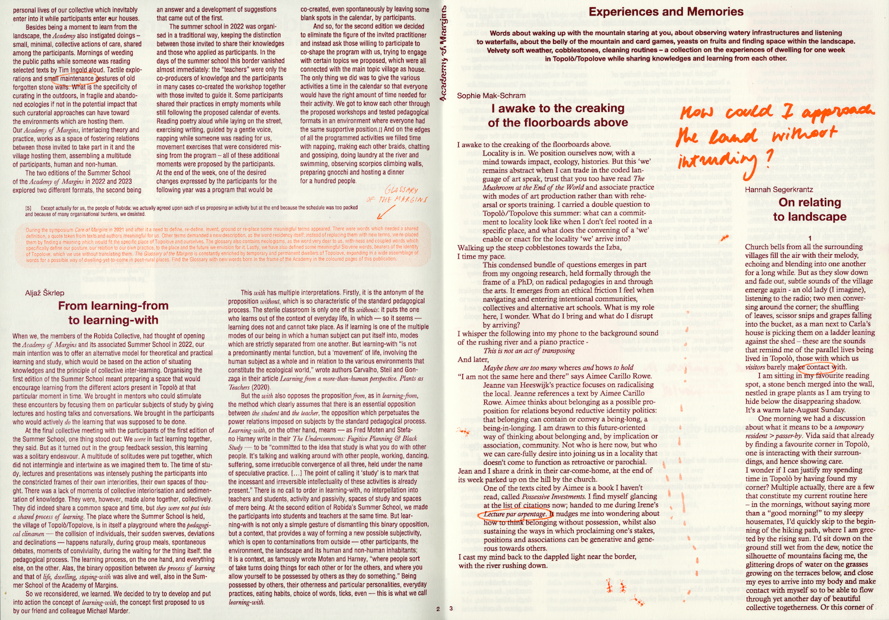
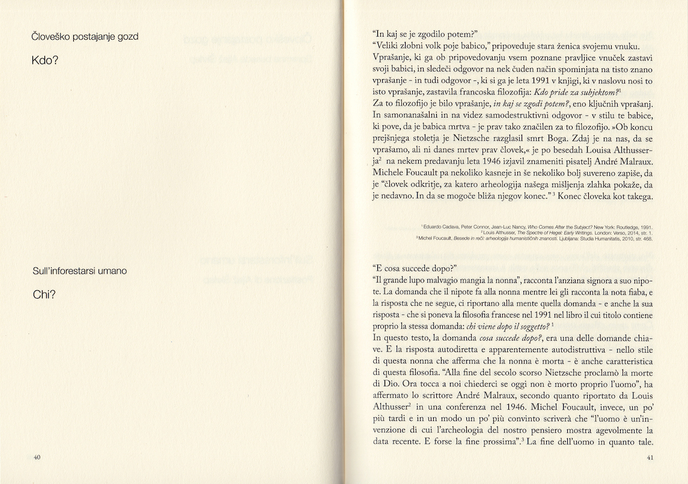
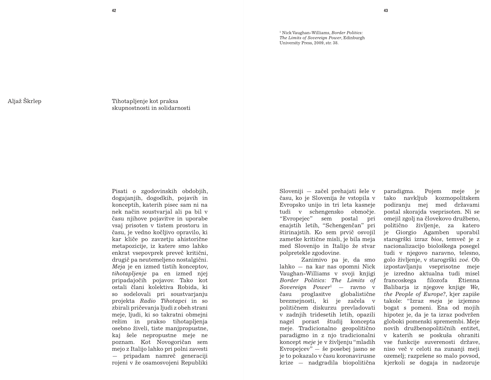
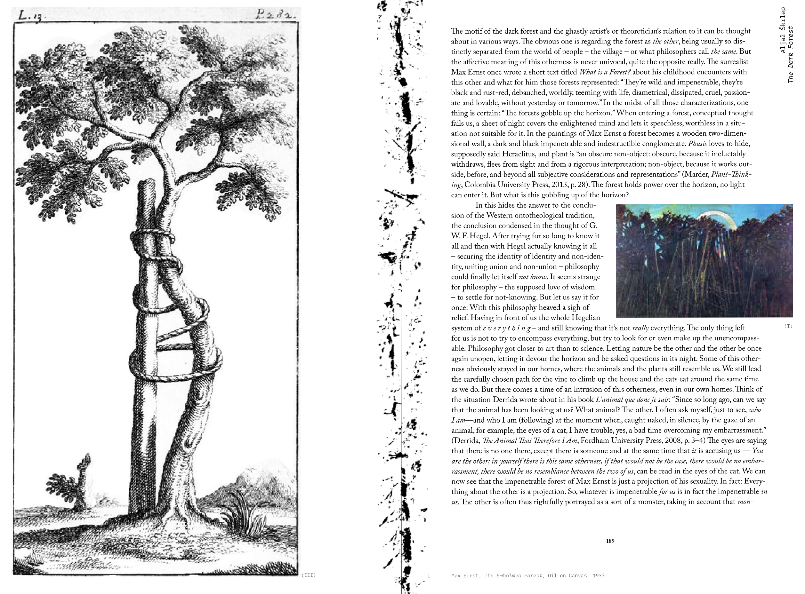
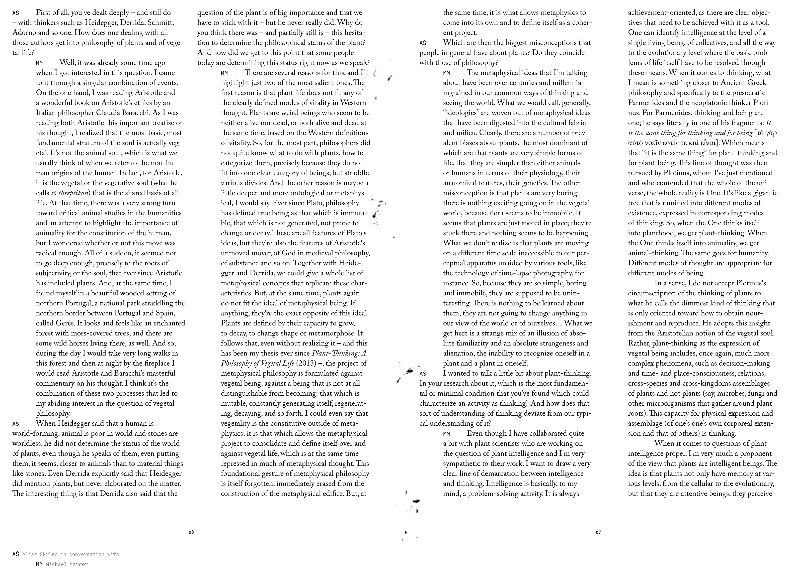
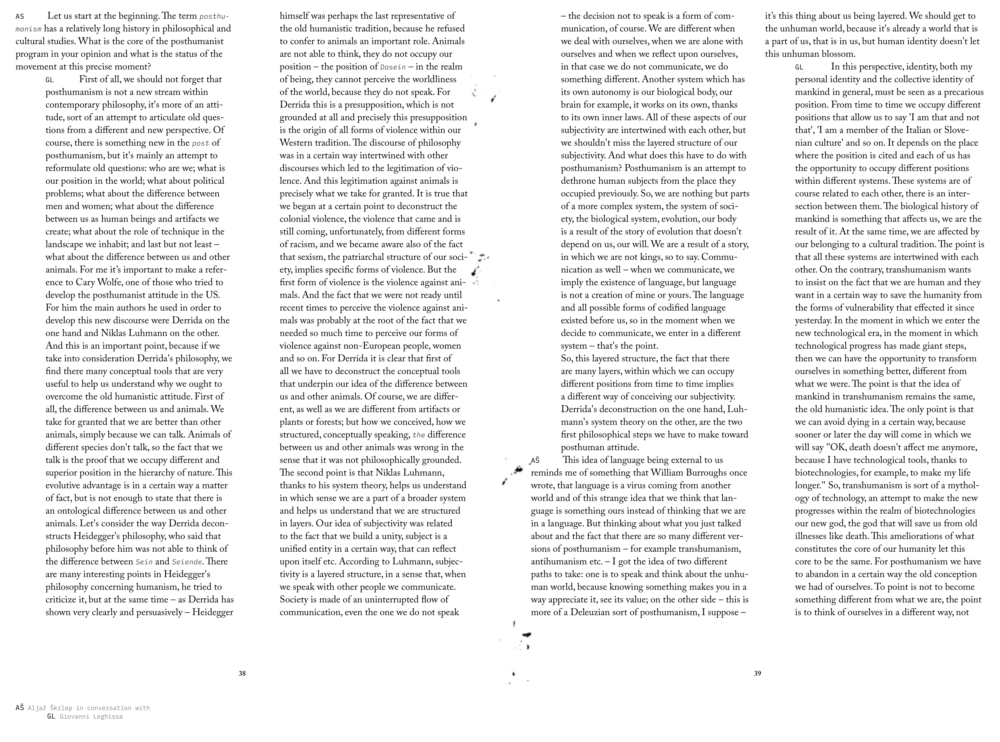

Modelling Future Ruralism
(2024, FAHR 021.3)
estado Límbico is a site-speculative fairytale, which proposes a method of joyous meddling with spaces and things of the past — stubbornly stuck in the past — and of affirming the possibility of telling their story in other, playful, almost child-like ways in which only futures exist. A novel story can be told by a simple gesture of re-ordering and re-configuring the established order of things. It is also a highly political method, which fits with the overarching program of the Robida Collective, the host of the residency which resulted in Estado Límbico. Recently, Hugo Reis reminded me of a conversation we had during their first stay in Topolò. He asked: Could Robida’s project of imagining new ways of inhabiting the village of Topolò by means of culture and art become a model that could be transferred in other contexts? The question left me with a sense of unease and at a loss for words. Are all rural areas inhabitable in the same way? Could our project be universalized?
→ Read the text ←

From Learning-From to Learning-With
(2024, Robida)
A reflection after two editions of Robida's Academy of Margins Summers School. In it, I try to distinguish learning-from from learning-with.
→ Read the text ←

Človeško postajanje gozd
spremna beseda
O postajanju gozd: Zgodba o Ultimi, ki postane gozd
(2023, Robida)
“In kaj se je zgodilo potem?”
“Veliki zlobni volk poje babico,” pripoveduje stara ženica svojemu vnuku.
Vprašanje, ki ga ob pripovedovanju vsem poznane pravljice vnuček zastavi svoji babici, in sledeči odgovor na nek čuden način spominjata na tisto znano vprašanje - in tudi odgovor -, ki si ga je leta 1991 v knjigi, ki v naslovu nosi to isto vprašanje, zastavila francoska filozofija: Kdo pride za subjektom?
Za to filozofijo je bilo vprašanje, in kaj se zgodi potem?, eno ključnih vprašanj. In samonanašalni in na videz samodestruktivni odgovor - v stilu te babice, ki pove, da je babica mrtva - je prav tako značilen za to filozofijo. »Ob koncu prejšnjega stoletja je Nietzsche razglasil smrt Boga. Zdaj je na nas, da se vprašamo, ali ni danes mrtev prav človek,« je po besedah Louisa Althusserja na nekem predavanju leta 1946 izjavil znameniti pisatelj André Malraux. Michele Foucault pa nekoliko kasneje in še nekoliko bolj suvereno zapiše, da je “človek odkritje, za katero arheologija našega mišljenja zlahka pokaže, da je nedavno. In da se mogoče bliža njegov konec.” Konec človeka kot takega. Ne, bolje rečeno, človeka kot subjekta, proizvoda določenega episteme in diskurza; dobe, v katero je vpet. A nekdo ostaja.
Kdo?
→ Kupi knjigo / compri il libro ←

Tihotapljanje kot praksa skupnostnosti in solidarnosti
(2022, KD Ivan Trinko)
S skupnostnostjo, ki je v tekstu predstavljena na primeru komunj, in tihotapljenjem se lahko zoperstavimo privatni in tudi javni lastnini, ki ravno tako kot privatna onemogoča nastanek prave skupnostnosti, saj je z javno lastnino vprašanje upravljanja prepuščeno birokratskemu stroju oblasti oz. države. Skupnostna solidarnost mora v prihodnje delovati onkraj delitve na privatno in javno lastnino: na temeljih skupnostnega upravljanja.
Katere bi lahko bile danes te prakse skupnostne solidarnosti? Morda je nesmiselno razmišljati o preprostih praksah solidarnosti, temveč prej o bolj kompleksnih “novih skupnostnih institucijah”. Ali kakor se je izrazil politični teoretik Peter D. Thomas: “Naš današnji izziv ni le oživiti koncept in prakso solidarnosti kot »tradicijo zatiranih«, ki nam bo pomagala bolje usklajevati in krepiti nadaljnje boje. Enako pomembno je to, da globina sodobne krize od nas zahteva, da te oživljene prakse solidarnosti predstavimo v institucionalnem smislu kot potencialni alternativni politični program in princip socializacije.”
→ Preberi si besedilo ←

The Dark Forest: A Bataillean Look On the Matter
(2021, Robida Magazine)
»They’re wild and impenetrable, they’re black and rust-red, debauched, worldly, teeming with life, diametrical, dissipated, cruel, passionate and lovable, without yesterday or tomorrow. […] The forests gobble up the horizon.«
- Max Ernst, What is A Forest?
Landscape of fear is a relatively know model based on the ecology of fear, which is a conceptual framework describing the psychological impact that predator-induced stress experienced by animals has on populations and ecosystems. Through Bataille's concept of sovereignty, touching upon horror cinema, I wanted to show how our human ontology, deep psychological presuppositions shaped the forest into a landscape of fear for us.
→ Read the text ←

Our Future Is Vegetal
interview with Michael Marder
(2021, Robida Magazine)
→ Read the text ←

The Point Is to Think of Ourselves in a Different Way
interview with Giovanni Leghissa
(2021, Robida Magazine)
Who are we? What is our position in the world? Which are the differences between men and women; human beings, animals, plants and artifacts? What can we learn from the flowering studies of animal and plant ontology?
→ Read the text ←